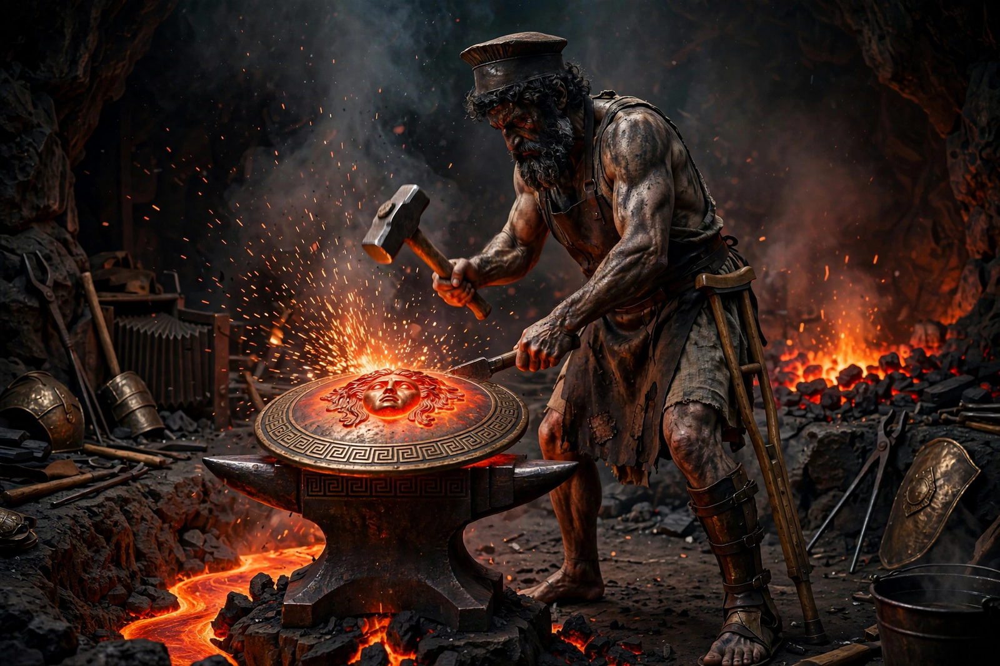

From Wikipedia, the free encyclopedia
| Hephaestus | |
|---|---|
| Affiliation | Greek mythology; god of fire, the forge, metalwork and craftsmen |
| Parents | Hera (alone, in Hesiod) or Zeus and Hera |
| Spouse | Aphrodite |
| Workshop | Beneath Mount Etna (in later tradition), assisted by the Cyclopes |
| Creations | Achilles' shield and armour; Pandora; Zeus's thunderbolts and aegis; the chains of Prometheus |
| Roman counterpart | Vulcan |

Hephaestus is the Greek god of fire, metalworking, smiths and craftsmen — the divine maker whose forge produced the weapons and wonders of Olympus: Achilles' shield, Zeus's thunderbolts and aegis, Pandora, and the first woman, fashioned from clay. Lame and soot-darkened, married (in the Odyssey) to Aphrodite who betrays him with Ares, he is the only Olympian who works, and the myths treat his craft with a respect they deny his person — the gods laugh at him limping with the wine-cup, and he answers mockery with masterpieces and with traps.
Two stories explain his lameness: Hera, ashamed of her imperfect child (in Hesiod she bore him alone, in rivalry with Zeus's Athena), threw him from Olympus, and he fell a day into the sea, to be raised by Thetis and Eurynome; or Zeus hurled him out for defending Hera, and he landed on Lemnos, his great cult island. His revenge on Hera — a golden throne that bound her fast when she sat in it — had to be undone by Dionysus getting him drunk and leading him back to Olympus on a mule, a comic triumph painted on a hundred vases. His workshop was later placed under Etna, his assistants the Cyclopes; his Roman form, Vulcan, gives us the volcano.
The forge's supreme literary moment is Iliad 18: Thetis begs new armour for Achilles, and Hephaestus makes a shield on which he depicts the whole world — earth, sea and sky, a city at peace and a city at war, ploughing, harvest, vintage, dancing — the cosmos held in a warrior's hand. The passage is the founding example of ekphrasis in Western literature, and it makes the smith-god, briefly, the poet's double: the maker who fits the world into his work.
Greek mythology · Hera · Zeus · Ares · Athena